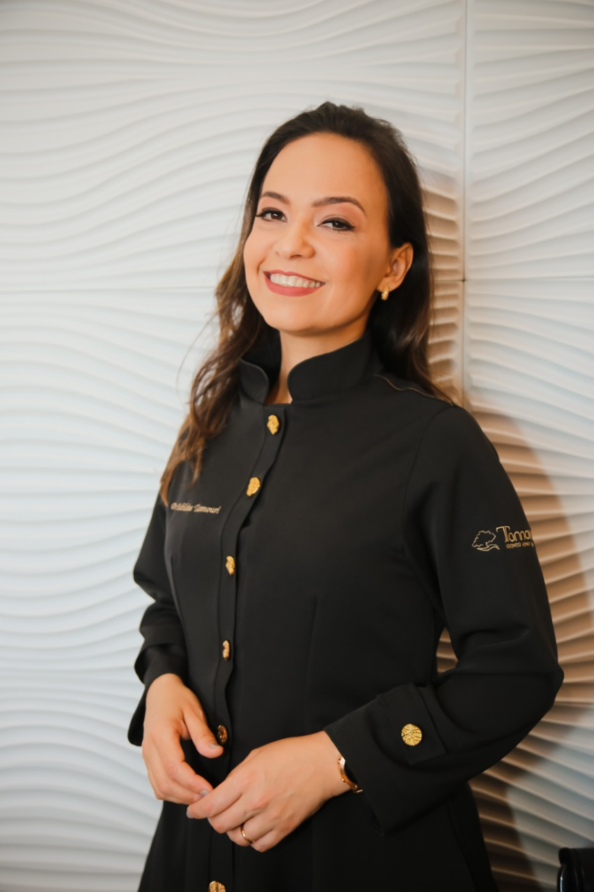

Voz falada e cantada
Aperfeiçoamento vocal, respiração e resistência para quem fala ou canta.
FONOAUDIOLOGIA · JOINVILLE, SC
Cuidado especializado para a voz, a fala e as funções da face. Um olhar atento à sua história e ao que você deseja conquistar.

CUIDADO QUE FAZ SENTIDO PARA VOCÊ
Da comunicação no dia a dia ao uso profissional da voz, conheça os atendimentos e converse sobre o que você precisa.
Aperfeiçoamento vocal, respiração e resistência para quem fala ou canta.
Trabalho de articulação, modulação e expressão para objetivos pessoais e profissionais.
Acompanhamento de dificuldades de fala, trocas de sons e desenvolvimento da linguagem.
Atenção à mastigação, deglutição, respiração e fala, integrada às necessidades odontológicas.
Trabalho da musculatura facial com foco funcional e estético.
Saúde vocal e estratégias de comunicação para pessoas, equipes e instituições.
Não sabe qual atendimento escolher? Conte sua necessidade à equipe e peça orientação sobre o agendamento.
Quero orientação pelo WhatsAppA indicação dos recursos depende da avaliação e dos objetivos do atendimento. A clínica também apresenta o life coaching entre seus serviços de desenvolvimento pessoal.
CONHEÇA QUEM VAI CUIDAR DE VOCÊ
Fonoaudióloga desde 1998 e especialista em Voz pelo CEFAC, em Curitiba, desde 2002. Sua atuação reúne voz, fala, linguagem e funções orofaciais.
Na Clínica Tannouri, a fonoaudiologia se encontra com a odontologia para considerar a relação entre a estrutura da face e suas funções.
UM PASSO DE CADA VEZ
Você não precisa chegar com todas as respostas. A avaliação ajuda a entender suas necessidades e conversar sobre as possibilidades de acompanhamento.
Uma dificuldade, um incômodo ou um objetivo com a voz: esse é o ponto de partida da conversa.
A avaliação fonoaudiológica orienta a identificação das funções que precisam de atenção.
Objetivos, frequência e recursos são definidos conforme a indicação para cada pessoa.
HISTÓRIAS DE QUEM JÁ PASSOU POR AQUI
Experiências compartilhadas por pacientes da Clínica Tannouri sobre o acompanhamento com a Edilaine.
Após um AVC, Sergio relata que iniciou o acompanhamento com dificuldades para falar e se alimentar. Em seu depoimento, conta que recuperou a fala e a alimentação por via oral, mantendo as consultas e os exercícios orientados.
José Carlos, músico, conta que enfrentou uma perda importante da voz e recebeu diagnóstico de paralisia nas cordas vocais. Seu relato descreve melhora durante o acompanhamento e a retomada do trabalho e do canto com seu grupo musical.
Apresentadora de TV, Fabiola relata que procurou acompanhamento após um granuloma nas cordas vocais. Destaca a atenção recebida, as orientações para cuidar da voz e a segurança que sente no conhecimento técnico da profissional.
Relatos resumidos a partir dos depoimentos publicados pela clínica. As experiências são individuais e não representam garantia de resultados. Ler os relatos completos
PERGUNTAS FREQUENTES
Informações para ajudar você a dar o primeiro passo.
Tirar uma dúvida no WhatsAppNão. Você pode explicar sua necessidade à equipe e solicitar uma avaliação fonoaudiológica. A indicação de atendimento depende da avaliação profissional.
Não. A clínica apresenta atendimentos para voz falada e cantada, fala, linguagem e funções da face, além de vocal coach e palestras.
Sim. O vocal coach apresentado pela clínica trabalha objetivos de comunicação, articulação e modulação da voz. Converse com a equipe sobre sua necessidade pessoal ou profissional.
Laserterapia, bandagem e eletroestimulação são recursos apresentados pela clínica. A escolha deve considerar a avaliação, a indicação e os objetivos do seu acompanhamento.
Não há um número único que sirva para todas as pessoas. A duração e a frequência do acompanhamento dependem das necessidades identificadas e da evolução individual.
Para receber informações atualizadas sobre valores, disponibilidade e formas de pagamento, fale diretamente com a equipe pelo WhatsApp.
Na Rua Tenente Paulo Lopes, 309, em Joinville, Santa Catarina. Peça à equipe as orientações de acesso ao confirmar seu agendamento.
VAMOS CONVERSAR?
Fale com a equipe e saiba como agendar sua avaliação.
Conversar com a Clínica TannouriRua Tenente Paulo Lopes, 309
Joinville · Santa Catarina
(47) 3434-1817
contato@clinicatannouri.com.br